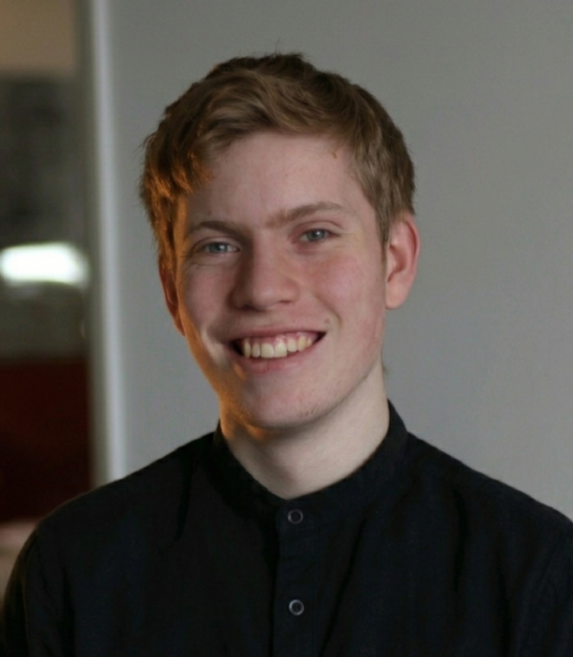

Uitgelicht werk

Sportolympiade Wageningen 2025
Aftermovie

125 jaar Gooische Hockey Club
Lustrumfilm

NK Wielrennen Ede
Aftermovie
Motorsport, autosport, sportevents. Run and gun, geen poespas, beeld dat blijft hangen.
Snel binnen, alle juiste shots. Ik loop mee, voel de sfeer aan en pak de momenten die je niet kunt plannen.
Aftermovies, hot lap content, social cuts. Strakke montage, veel tempo, geen poespas.
Korte lijntjes, korte levertijd. Je content staat online voordat de hype voorbij is.
Het hele event in één film. Van sportwedstrijden en motorrally's tot autosport en festivals. Overal waar gas op zit.
Onboard, drone, trackside. Voor teams, sponsors en organisaties die er met hun beeld bovenuit willen steken.
Reels en shorts in elk formaat. Korte content die je kanalen draaiende houdt en lekker pakt in de feed.
Voor merken, dealers en teams in motorsport, autosport en sport. Beeld dat past bij wat je doet, zonder dat het reclame voelt.
Aftermovie
Lustrumfilm
Aftermovie
"Snel, plezier en persoonlijk. Ik maak geen stijve, gepolijste plaatjes. Ik maak beeld waar energie in zit. Run and gun is mijn favoriete stijl."
Het vak geleerd op het Technova College in Ede, de rest opgepikt op de set en op het asfalt. Eerder video-editor bij DMC Productions en Ziggo Sport, nu eigenaar van Luas Creative Solutions.
We beginnen altijd met koffie. Jij vertelt wat je voor ogen hebt, ik denk mee.

Stuur een berichtje, vertel kort over je event en dan plannen we koffie in.
Neem contact op